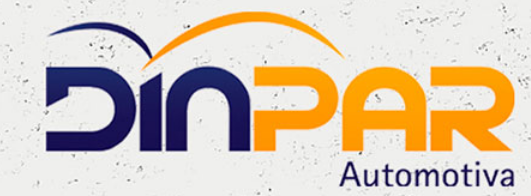
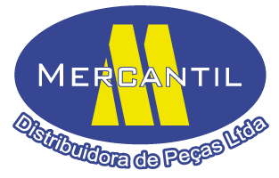

| Fornecedores |
1. DPK Distribuidora de auto peças
Esse é um dos fornecedores de peças automotivas para revenda que possui sede em Campinas/SP. Essa empresa está no mercado desde 1987 e já conta com 17 filias espalhadas por várias cidades do Brasil, atendendo assim várias regiões.
Ela fornece peças para linha de veículo leve, pesada, fornece acessórios e também peças para moto no atacado.
Telefone: (19) 3728 – 8445
2. Dinpar – Fornecedor de peças automotivas para revenda
Com sede em São Paulo e há mais de 33 anos no mercado, essa empresa é uma importante fornecedora de peças para carros. Ela trabalha com vários itens, como a linha de produtos químicos para veículos, produtos de fixação, freios, parte de suspensão e muito mais.
Telefone: (11) 2984 – 6840
3. Mercantil Distribuidora de Peças
Essa é outra distribuidora bastante tradicional no mercado que está atuando desde 1989 na cidade de Belo Horizonte/MG. Ela trabalha tanto com vendas no atacado quanto no varejo.
Sua especialidade são peças para motores e cabeçotes. Nela você encontra peças para carros de passeio, vans, caminhonetes, caminhões e vários outros veículos.
Telefone: (31) 3304 – 8222
4. Sama Autopeças
Mais uma grande referência na distribuição de peças automotivas em todo o Brasil, tanto que ela conta com 24 filiais em vários estados brasileiros.
Iniciou como distribuidora de peças em 1965 e depois foi integrada ao Grupo Comolatti, que são várias empresas de São Paulo especializadas na distribuição de peças.
Telefone: (43) 3378 – 6000
5. Nacional Atacado – Distribuidora de Peças Automotivas
Essa empresa fica na cidade de Serra/ES e está no mercado desde 1972 atuando com a distribuição de peças para lojistas, auto center e revenda de peças em geral.
Nela você encontra mais de 280 tipos de produtos, que vão desde peças para motores até a parte elétrica e de câmbio.
Telefone: (27) 2121 – 1300
6. SK Mobility <br>Na nossa lista de fornecedores de peças automotivas, essa é uma empresa que se destaca bastante, por ser considerada uma das maiores distribuidoras do país. Tanto que ela possui 49 filiais espalhadas pelo Brasil para conseguir atender as 5 regiões.
São mais de 40 mil tipos de peças distribuídas por essa empresa no mercado.
Telefone: (11) 3616 – 0622